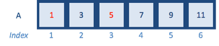
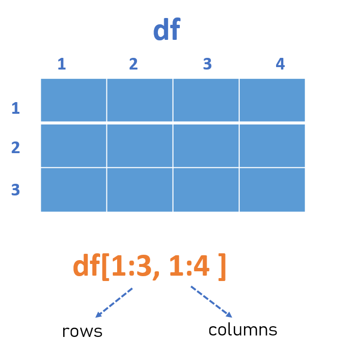

Week4-2
A New Week!

We aren’t computer scientists and that’s okay!
We make lots of mistakes. Mistakes are funny. You can laugh with us.
Let’s go, Simba, Pumbaa, and Timon!
1 subset a vector
We retrieve elements of a vector by calling an index inside a [ ] bracket operator.

If we want to find the index of certain values, the which() function works. It can take a logical vector.
2 subset a dataframe
A data frame is composed of rows and columns. Again we use the [ ] bracket operator to subset a dataframe.

3 for loops
Based on my data analysis experience, for loops may be the only looping construct that you will need in R.
In R, for loops take an interator variable and assign it successive values from a sequence or vector. For loops are most commonly used for iterating over the elements of an object, for example vector.
# Basic for loop structure
for (interator variable in vector) {
do something in the braces
}
# try a simple for loop
1:6 # The colon operator creates a series of numbers in sequence
for (i in 1:6){
print(i)
}The above loop takes the i variable and each iteration of the loop gives it values 1, 2, 3, …, 6, executes the code within { }, and then the loop exits.
for (i in 1:length(A)){
print(A[i])
}
for (i in seq_along(A)){ # seq_along() generates an integer sequence based on the length of A
print(A[i])
}
for (i in A) {
print(i)
}
sum_A <- 0
for (i in A) {
sum_A <- sum_A + i
}
sum_A
# imagine have a simple dataframe
df <- data.frame(
a = rnorm(10),
b = rnorm(10),
c = rnorm(10),
d = rnorm(10)
)
# We want to calculate the median of each column
median(df$a)
median(df$a)
median(df$a)
median(df$a)
# Too many copy and paste. Instead, we can a for loop:
median_df <- numeric(ncol(df)) # allocate sufficient space for the output
for (i in seq_along(df)) { #sequence
median_df[i] <- median(df[,i]) # body
}
median_dfExercise
write a loop to compute the mean of first four columns in airquality data
4 Recap
subset a vector
subset a dataframe
for loops